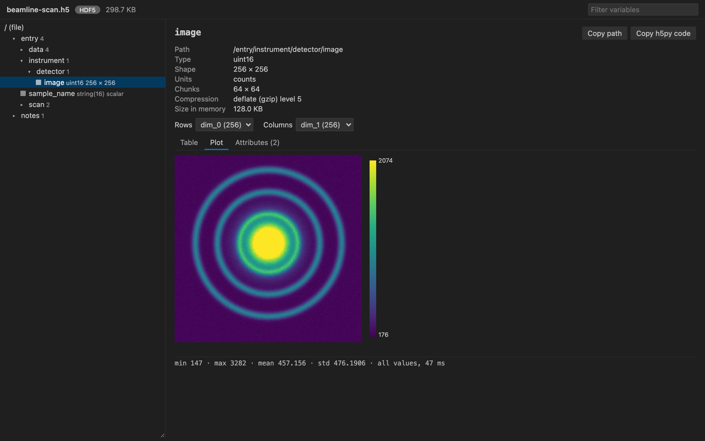

Open files in VS Code and Cursor / Science data
Open an HDF5 (.h5) file in VS Code
Install the free NetCDF Viewer & HDF5 Viewer extension and click the .h5 file. Groups and datasets show as a tree. Click a dataset to see its type, shape, chunks and compression, its values as a table, and 2D data as a heatmap. Compressed data (LZF, Blosc, bitshuffle, Zstd, LZ4, bzip2, ZFP) opens without Python or h5py.
Free, MIT license. Extension ID zovo.hdf5-netcdf-explorer, version 0.6.1. Needs VS Code 1.90.0 or newer.

Steps in VS Code
- Install NetCDF Viewer & HDF5 Viewer from the Marketplace, or press Ctrl+P (Cmd+P on macOS) and run
ext install zovo.hdf5-netcdf-explorer. - Click a
.h5,.hdf5or.he5file. Also.nxs,.h5ad,.jld2and.loom. - Pick a dataset in the tree. Switch between Table and Plot, and pick which dimensions are rows and columns.
- Click "Copy h5py code" to get the Python line that reads the same dataset.
- For a MATLAB v7.3 .mat file, right-click it and pick "Open in HDF5 NetCDF Explorer".
Steps in Cursor, Windsurf or VSCodium
- Open the Extensions view with Ctrl+Shift+X (Cmd+Shift+X on macOS).
- Search for
zovo.hdf5-netcdf-explorerand click Install. Cursor, Windsurf and VSCodium install from Open VSX, where it is published aszovo/hdf5-netcdf-explorer. - If your editor has no gallery, download the .vsix from the Open VSX page and run "Extensions: Install from VSIX...".
- Then use it the same way as in VS Code.
What NetCDF Viewer & HDF5 Viewer handles
- Stats for each dataset: min, max, mean, std, and counts of fill, NaN and Inf values.
- RGB and RGBA images drawn as pictures.
- In the README test, a 37 GB array opened and drew a sampled heatmap in about one second.
What it does not do
- HDF4 files are not supported. Rarer filters such as SZ show a message instead of values.
- MATLAB v5 .mat files are not HDF5. Re-save them with
-v7.3. - It's a viewer. It never writes to the file.
Other options
- HDF5 Preview (
lochbrunner.vscode-hdf5-viewer, 50,933 installs, not on Open VSX). Its own description: "Displays HDF5 files in VS code". Not on Open VSX, so not in Cursor. - HDFView. The desktop app from The HDF Group. It can also edit.
- h5ls and h5dump. The HDF5 command line tools print the structure and values.
Install counts and Open VSX status were checked on 8 November 2026. Descriptions in quotes are the extensions' own.
Questions
Do I need h5py?
No. The extension reads HDF5 with a WebAssembly build of the library, so nothing else has to be installed.
Can I open NetCDF-4 files too?
Yes. NetCDF-4 files are HDF5 underneath, and the extension also decodes the NetCDF conventions. See the NetCDF guide.
Does it work over Remote SSH?
Yes, and in WSL and dev containers.
More about NetCDF Viewer & HDF5 Viewer
Read the NetCDF Viewer & HDF5 Viewer page for every feature and setting, or the source code on GitHub.
Related guides
- NetCDF Viewer & HDF5 Viewer on the VS Code Marketplace (also on Open VSX). Browses NetCDF, HDF5 and MATLAB .mat files in VS Code.
- A free NetCDF viewer that runs in VS Code
- Compare two NetCDF files
- Shapefile to GeoJSON in VS Code
- Open a .docx Word file in VS Code
Zovo Pro and support
Zovo Pro: USD 19 once, every Zovo viewer. It turns on the Pro tools in this extension and in the other Zovo extensions you use. The free features stay free.
After a card payment your license key shows on the next page. Paste it with the command "Zovo Pro: Enter a key".
You can also support the work with no Pro:
Need your format supported?
Open a format request with a sample file, and I reply there whether it can be done. For USD 299 once, through this GitHub Sponsors tier, I add your file format or a missing feature to this extension, with tests, within 7 days.